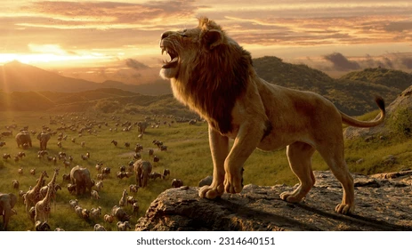

WILD FOREST
FORESTS

- THE FOREST
-
Forests, also known as the “green lungs of the earth”, and play a crucial role in sustaining and maintaining the planet's natural equilibrium and balancing the food cycle.Forests serve as a natural habitat for large populations of wildlife, as well as the growth of trees, shrubs, and a wide variety of plants, all of which are on the decline. As a result, forest conservation is a responsibility that all of us must assume. In addition, forests give us a large number of raw materials for various products like paper, rayon, gums, medicinal drugs and more. Other than that, forests are also a major source of employment for a significant population. For example, people are involved in their protection, harvesting, regeneration, raw material processing and more. Moreover, forests are largely responsible for preserving the physical features of our planet. They monitor soil erosion and prevent it from happening. Further, they alleviate floods by making the streams flow continually. This, in turn, helps our agriculture to a great extent. Most importantly, forests are a habitat for wildlife. They provide them with shelter and food. Thus, it is quite important to protect forests and furthermore enhance the forest cover for a greener and sustainable future. Get the huge list of more than 500 Essay Topics and Ideas Improving Forest Cover When we talk about forest cover, we do not merely refer to planting new trees but also improving the degraded forest land. To meet the fulfilments of the demand for timber and non-timber forests, we need to have a comprehensive approach to enhance the forest cover. Forests are being wiped out and trees are being cut down at a rapid rate. To meet the other needs of humans, we are losing sight of the bigger picture. People need to take steps to improve the forest cover rather than decrease it. The government must regulate the cutting down of trees. We must adopt roper methods which ensure the regrowth of trees. This way, we will be able to fulfill both the needs. Furthermore, we must control forest fires. We must adopt the latest techniques which will help in fire fighting more efficiently. This will prevent further loss of trees and animals. Most importantly, afforestation plus reforestation must be practiced. The people and government must plant new trees in place of the one cut down. Moreover, they must plant trees in new areas to develop a forest. In short, forests are a great blessing of nature. Various types of forests are home to a thousand animals and also means of livelihood for numerous people. We must recognize the importance of forests and take proper measures to tackle the issue of deforestation.
BIRDS
- EAGLE
- Nature lovers will be excited to know that you’ll soon be able to spend some time on the Connecticut River while staying at Saybrook Point Resort & Marina. When you’re looking for fun things to do in CT in the winter, bird watching in February and March is a must. Whether you travel with kids along to Old Saybrook, CT, or are on your romantic getaways with your significant other, a cruise offers an excellent time for all ages. Learn more about one of the best Connecticut attractions that you’ll want to take advantage of during your stay, below!
WILD LIFE ANIMALS

- ANIMALS
- Wild animals are animals that live in forests. These animals are not normally domesticated. The major wild animals of India are elephant, tiger, lion, deer, bear etc. Wild animals are very important in balancing the environment. They provide stability to different natural processes of nature. It can be found in all ecosystems, desert, rain forests, plains and other areas. In India, we can see various wild animals in the forest. Wild animals help to maintain the ecological balance of nature and maintain the food chain. We get useful substances and wild animal products like ivory, leather, honey, tusk etc from these animals. We should protect wild animals.
THE MOUNTAINS

- MOUNTAINS
- The beauty of the forest lies in its natural diversity, tranquility, and sense of wonder. Forests are home to a wide variety of plant and animal species, and their lush greenery and towering trees create a peaceful and serene environment. The interplay of light and shadow, the sounds of birds and wildlife, and the fresh, earthy scent all contribute to the enchanting beauty of the forest. Additionally, forests provide essential ecosystem services such as oxygen production, carbon sequestration, and habitat for countless species, making them not only beautiful but also vital to the health of our planet.
-
| Sno |
Category |
Nature |
| 1 |
Bird |
Soft |
| 2 |
Lion |
Violent |
| 3 |
Elephant |
Both soft & Violent |